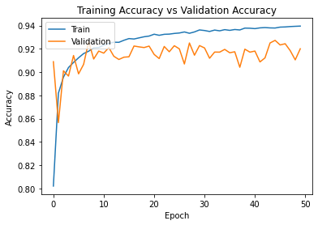
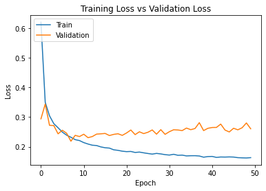
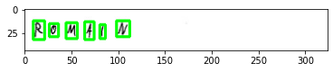
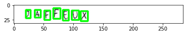
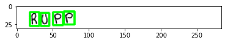
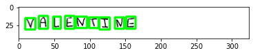

dir = "../input/handwritten-characters/Train/"
train_data = []
img_size = 32
non_chars = ["#","$","&","@"]
for i in os.listdir(dir):
if i in non_chars:
continue
count = 0
sub_directory = os.path.join(dir,i)
for j in os.listdir(sub_directory):
count+=1
if count > 4000:
break
img = cv2.imread(os.path.join(sub_directory,j),0)
img = cv2.resize(img,(img_size,img_size))
train_data.append([img,i])Optical Character Recognition Untuk Gambar Dengan Tulisan Tangan Menggunakan Tensorflow
Artikel ini membahas tentang cara sebuah gagasan dan pendekatan sederhana untuk membuat sebuah OCR (Optical Character Recognition) untuk melakukan extraksi text dari sebuah gambar catatan/halaman yang ditulis tangan.
Apa itu Optical Character Recognition (OCR)?
Optical Character Recognition adalah konversi otomatis teks dalam gambar menjadi kode huruf yang dapat digunakan dalam komputer dan aplikasi pemrosesan teks. Secara sederhana, ini adalah ekstraksi teks dari sebuah catatan/halaman dengan tulisan tangan dengan menggunakan alat seperti stylus, pensil ,pena ,dll.
Cara Kerja
- 1 : Buat sebuah classifier digit (0-9) dan huruf (A-Z + a-z) menggunakan arsitektur cnn
- 2 : Terapkan segmentasi pada setiap huruf pada kata yang telah ditulis
- 3 : Klasifikasi setiap segment huruf kemudian dapatkan kata akhir dari gambar tersebut.
::: {.cell _cell_guid=‘79c7e3d0-c299-4dcb-8224-4455121ee9b0’ _uuid=‘d629ff2d2480ee46fbb7e2d37f6b5fab8052498a’ execution=‘{“iopub.execute_input”:“2022-11-09T13:40:57.327363Z”,“iopub.status.busy”:“2022-11-09T13:40:57.326909Z”,“iopub.status.idle”:“2022-11-09T13:40:57.334193Z”,“shell.execute_reply”:“2022-11-09T13:40:57.333292Z”,“shell.execute_reply.started”:“2022-11-09T13:40:57.327330Z”}’ trusted=‘true’ execution_count=11}
# Import Library
import numpy as np
import pandas as pd
from keras.preprocessing.image import ImageDataGenerator
import os
import random
import cv2
import imutils
import random
import matplotlib.pyplot as plt
import seaborn as sns
from sklearn.preprocessing import LabelBinarizer
from keras.utils import np_utils
from keras.models import Sequential
from keras import optimizers
from sklearn.preprocessing import LabelBinarizer
from keras import backend as K
from keras.layers import Dense, Activation, Flatten, Dense,MaxPooling2D, Dropout
from keras.layers import Conv2D, MaxPooling2D, BatchNormalization:::
Dari data train hanya gunakan gambar (A-Z + a-z) dan 0-9. Kemudian ubah setiap nilai pixel pada gambar menjadi ke bentuk array
len(train_data)140000Lakukan hal yang sama pada data validation
val_dir = "../input/handwritten-characters/Validation/"
val_data = []
img_size = 32
for i in os.listdir(val_dir):
if i in non_chars:
continue
count = 0
sub_directory = os.path.join(val_dir,i)
for j in os.listdir(sub_directory):
count+=1
if count > 1000:
break
img = cv2.imread(os.path.join(sub_directory,j),0)
img = cv2.resize(img,(img_size,img_size))
val_data.append([img,i])len(val_data)15209# Shuffle atau acak setiap data yang ada pada train dan validation
random.shuffle(train_data)
random.shuffle(val_data)# Pisahkan nilai fitur dan label pada data train menjadi train_X untuk fitur dan train_Y untuk label
train_X = []
train_Y = []
for features,label in train_data:
train_X.append(features)
train_Y.append(label)# Pisahkan nilai fitur dan label pada data validation menjadi val_X untuk fitur dan val_Y untuk label
val_X = []
val_Y = []
for features,label in val_data:
val_X.append(features)
val_Y.append(label)Transformasi label ke bentuk biner dengan menggunakan LabelBinarizer() fungsi untuk mempercepat proses komputasi Pada kasus ini terdapat 62 : * A = [1, 0, 0, … ,0] * B = [0, 1, 0, … ,0] * C = [0, 0, 1, … ,0] * dst
LB = LabelBinarizer()
train_Y = LB.fit_transform(train_Y)
val_Y = LB.fit_transform(val_Y)train_X = np.array(train_X)/255.0 # Ubah tipe data train_X dari list menjadi numpy.array dan ubah rentang nilai pixel dari 0-255 menjadi 0-1
train_X = train_X.reshape(-1,32,32,1) # Ubah dimensi numpy.array dari (jumlah array, 32, 32) menjadi (jumlah array, 32, 32, 1)
train_Y = np.array(train_Y) # Ubah tipe data train_Y dari list menjadi numpy.arrayval_X = np.array(val_X)/255.0 # Ubah tipe data val_X dari list menjadi numpy.array dan ubah rentang nilai pixel dari 0-255 menjadi 0-1
val_X = val_X.reshape(-1,32,32,1) # Ubah dimensi numpy.array dari (jumlah array, 32, 32) menjadi (jumlah array, 32, 32, 1)
val_Y = np.array(val_Y) # Ubah tipe data val_Y dari list menjadi numpy.arrayprint(train_X.shape,val_X.shape) # Tampilkan hasil reshape(140000, 32, 32, 1) (15209, 32, 32, 1)print(train_Y.shape,val_Y.shape) # Tampilkan hasil reshape(140000, 35) (15209, 35)Bangun model arsitektur neural network yang dibuat. Pada kasus ini, karena kita menghadapi kasus image recognition maka saya akan menggunakan model sequential menggunakan CNN(Convolutional Neural Network)
model = Sequential()
model.add(Conv2D(32, (3, 3), padding = "same", activation='relu', input_shape=(32,32,1)))
model.add(MaxPooling2D(pool_size=(2,2)))
model.add(Conv2D(64, (3, 3), activation='relu'))
model.add(MaxPooling2D(pool_size=(2,2)))
model.add(Conv2D(128, (3, 3), activation='relu'))
model.add(MaxPooling2D(pool_size=(2,2)))
model.add(Dropout(0.25))
model.add(Flatten())
model.add(Dense(128, activation='relu'))
model.add(Dropout(0.2))
model.add(Dense(35, activation='softmax'))model.summary()Model: "sequential"
_________________________________________________________________
Layer (type) Output Shape Param #
=================================================================
conv2d (Conv2D) (None, 32, 32, 32) 320
_________________________________________________________________
max_pooling2d (MaxPooling2D) (None, 16, 16, 32) 0
_________________________________________________________________
conv2d_1 (Conv2D) (None, 14, 14, 64) 18496
_________________________________________________________________
max_pooling2d_1 (MaxPooling2 (None, 7, 7, 64) 0
_________________________________________________________________
conv2d_2 (Conv2D) (None, 5, 5, 128) 73856
_________________________________________________________________
max_pooling2d_2 (MaxPooling2 (None, 2, 2, 128) 0
_________________________________________________________________
dropout (Dropout) (None, 2, 2, 128) 0
_________________________________________________________________
flatten (Flatten) (None, 512) 0
_________________________________________________________________
dense (Dense) (None, 128) 65664
_________________________________________________________________
dropout_1 (Dropout) (None, 128) 0
_________________________________________________________________
dense_1 (Dense) (None, 35) 4515
=================================================================
Total params: 162,851
Trainable params: 162,851
Non-trainable params: 0
_________________________________________________________________model.compile(loss='categorical_crossentropy', optimizer="adam",metrics=['accuracy'])history = model.fit(train_X,train_Y, epochs=50, batch_size=32, validation_data = (val_X, val_Y), verbose=1)Epoch 1/50
4375/4375 [==============================] - 13s 3ms/step - loss: 0.6208 - accuracy: 0.8020 - val_loss: 0.2941 - val_accuracy: 0.9089
Epoch 2/50
4375/4375 [==============================] - 13s 3ms/step - loss: 0.3500 - accuracy: 0.8819 - val_loss: 0.3439 - val_accuracy: 0.8565
Epoch 3/50
4375/4375 [==============================] - 12s 3ms/step - loss: 0.3044 - accuracy: 0.8957 - val_loss: 0.2723 - val_accuracy: 0.9011
Epoch 4/50
4375/4375 [==============================] - 12s 3ms/step - loss: 0.2779 - accuracy: 0.9039 - val_loss: 0.2713 - val_accuracy: 0.8966
Epoch 5/50
4375/4375 [==============================] - 13s 3ms/step - loss: 0.2639 - accuracy: 0.9083 - val_loss: 0.2434 - val_accuracy: 0.9143
Epoch 6/50
4375/4375 [==============================] - 12s 3ms/step - loss: 0.2493 - accuracy: 0.9123 - val_loss: 0.2556 - val_accuracy: 0.8985
Epoch 7/50
4375/4375 [==============================] - 13s 3ms/step - loss: 0.2389 - accuracy: 0.9159 - val_loss: 0.2454 - val_accuracy: 0.9066
Epoch 8/50
4375/4375 [==============================] - 12s 3ms/step - loss: 0.2319 - accuracy: 0.9179 - val_loss: 0.2186 - val_accuracy: 0.9262
Epoch 9/50
4375/4375 [==============================] - 12s 3ms/step - loss: 0.2238 - accuracy: 0.9208 - val_loss: 0.2383 - val_accuracy: 0.9112
Epoch 10/50
4375/4375 [==============================] - 13s 3ms/step - loss: 0.2207 - accuracy: 0.9211 - val_loss: 0.2343 - val_accuracy: 0.9181
Epoch 11/50
4375/4375 [==============================] - 12s 3ms/step - loss: 0.2138 - accuracy: 0.9231 - val_loss: 0.2421 - val_accuracy: 0.9163
Epoch 12/50
4375/4375 [==============================] - 13s 3ms/step - loss: 0.2090 - accuracy: 0.9247 - val_loss: 0.2305 - val_accuracy: 0.9211
Epoch 13/50
4375/4375 [==============================] - 12s 3ms/step - loss: 0.2050 - accuracy: 0.9257 - val_loss: 0.2343 - val_accuracy: 0.9136
Epoch 14/50
4375/4375 [==============================] - 12s 3ms/step - loss: 0.2039 - accuracy: 0.9256 - val_loss: 0.2425 - val_accuracy: 0.9108
Epoch 15/50
4375/4375 [==============================] - 13s 3ms/step - loss: 0.1992 - accuracy: 0.9274 - val_loss: 0.2435 - val_accuracy: 0.9128
Epoch 16/50
4375/4375 [==============================] - 12s 3ms/step - loss: 0.1964 - accuracy: 0.9288 - val_loss: 0.2448 - val_accuracy: 0.9131
Epoch 17/50
4375/4375 [==============================] - 13s 3ms/step - loss: 0.1952 - accuracy: 0.9284 - val_loss: 0.2377 - val_accuracy: 0.9224
Epoch 18/50
4375/4375 [==============================] - 12s 3ms/step - loss: 0.1895 - accuracy: 0.9294 - val_loss: 0.2416 - val_accuracy: 0.9217
Epoch 19/50
4375/4375 [==============================] - 12s 3ms/step - loss: 0.1877 - accuracy: 0.9304 - val_loss: 0.2437 - val_accuracy: 0.9211
Epoch 20/50
4375/4375 [==============================] - 13s 3ms/step - loss: 0.1848 - accuracy: 0.9310 - val_loss: 0.2383 - val_accuracy: 0.9223
Epoch 21/50
4375/4375 [==============================] - 12s 3ms/step - loss: 0.1833 - accuracy: 0.9326 - val_loss: 0.2464 - val_accuracy: 0.9152
Epoch 22/50
4375/4375 [==============================] - 13s 3ms/step - loss: 0.1839 - accuracy: 0.9316 - val_loss: 0.2564 - val_accuracy: 0.9116
Epoch 23/50
4375/4375 [==============================] - 12s 3ms/step - loss: 0.1805 - accuracy: 0.9325 - val_loss: 0.2408 - val_accuracy: 0.9220
Epoch 24/50
4375/4375 [==============================] - 12s 3ms/step - loss: 0.1818 - accuracy: 0.9327 - val_loss: 0.2503 - val_accuracy: 0.9175
Epoch 25/50
4375/4375 [==============================] - 13s 3ms/step - loss: 0.1793 - accuracy: 0.9332 - val_loss: 0.2443 - val_accuracy: 0.9227
Epoch 26/50
4375/4375 [==============================] - 12s 3ms/step - loss: 0.1770 - accuracy: 0.9336 - val_loss: 0.2488 - val_accuracy: 0.9200
Epoch 27/50
4375/4375 [==============================] - 13s 3ms/step - loss: 0.1749 - accuracy: 0.9345 - val_loss: 0.2566 - val_accuracy: 0.9070
Epoch 28/50
4375/4375 [==============================] - 12s 3ms/step - loss: 0.1773 - accuracy: 0.9334 - val_loss: 0.2423 - val_accuracy: 0.9250
Epoch 29/50
4375/4375 [==============================] - 12s 3ms/step - loss: 0.1756 - accuracy: 0.9345 - val_loss: 0.2576 - val_accuracy: 0.9145
Epoch 30/50
4375/4375 [==============================] - 13s 3ms/step - loss: 0.1731 - accuracy: 0.9362 - val_loss: 0.2417 - val_accuracy: 0.9228
Epoch 31/50
4375/4375 [==============================] - 12s 3ms/step - loss: 0.1717 - accuracy: 0.9358 - val_loss: 0.2507 - val_accuracy: 0.9208
Epoch 32/50
4375/4375 [==============================] - 13s 3ms/step - loss: 0.1743 - accuracy: 0.9349 - val_loss: 0.2572 - val_accuracy: 0.9119
Epoch 33/50
4375/4375 [==============================] - 12s 3ms/step - loss: 0.1710 - accuracy: 0.9361 - val_loss: 0.2564 - val_accuracy: 0.9172
Epoch 34/50
4375/4375 [==============================] - 12s 3ms/step - loss: 0.1715 - accuracy: 0.9355 - val_loss: 0.2544 - val_accuracy: 0.9172
Epoch 35/50
4375/4375 [==============================] - 13s 3ms/step - loss: 0.1689 - accuracy: 0.9365 - val_loss: 0.2629 - val_accuracy: 0.9195
Epoch 36/50
4375/4375 [==============================] - 12s 3ms/step - loss: 0.1695 - accuracy: 0.9359 - val_loss: 0.2575 - val_accuracy: 0.9166
Epoch 37/50
4375/4375 [==============================] - 12s 3ms/step - loss: 0.1696 - accuracy: 0.9366 - val_loss: 0.2614 - val_accuracy: 0.9175
Epoch 38/50
4375/4375 [==============================] - 12s 3ms/step - loss: 0.1685 - accuracy: 0.9362 - val_loss: 0.2812 - val_accuracy: 0.9041
Epoch 39/50
4375/4375 [==============================] - 12s 3ms/step - loss: 0.1645 - accuracy: 0.9378 - val_loss: 0.2544 - val_accuracy: 0.9197
Epoch 40/50
4375/4375 [==============================] - 13s 3ms/step - loss: 0.1666 - accuracy: 0.9377 - val_loss: 0.2621 - val_accuracy: 0.9172
Epoch 41/50
4375/4375 [==============================] - 12s 3ms/step - loss: 0.1671 - accuracy: 0.9374 - val_loss: 0.2648 - val_accuracy: 0.9181
Epoch 42/50
4375/4375 [==============================] - 13s 3ms/step - loss: 0.1639 - accuracy: 0.9380 - val_loss: 0.2651 - val_accuracy: 0.9087
Epoch 43/50
4375/4375 [==============================] - 12s 3ms/step - loss: 0.1652 - accuracy: 0.9383 - val_loss: 0.2764 - val_accuracy: 0.9122
Epoch 44/50
4375/4375 [==============================] - 12s 3ms/step - loss: 0.1649 - accuracy: 0.9380 - val_loss: 0.2562 - val_accuracy: 0.9250
Epoch 45/50
4375/4375 [==============================] - 13s 3ms/step - loss: 0.1654 - accuracy: 0.9379 - val_loss: 0.2498 - val_accuracy: 0.9273
Epoch 46/50
4375/4375 [==============================] - 12s 3ms/step - loss: 0.1650 - accuracy: 0.9387 - val_loss: 0.2623 - val_accuracy: 0.9233
Epoch 47/50
4375/4375 [==============================] - 13s 3ms/step - loss: 0.1629 - accuracy: 0.9388 - val_loss: 0.2570 - val_accuracy: 0.9244
Epoch 48/50
4375/4375 [==============================] - 12s 3ms/step - loss: 0.1623 - accuracy: 0.9392 - val_loss: 0.2640 - val_accuracy: 0.9185
Epoch 49/50
4375/4375 [==============================] - 12s 3ms/step - loss: 0.1619 - accuracy: 0.9394 - val_loss: 0.2802 - val_accuracy: 0.9105
Epoch 50/50
4375/4375 [==============================] - 13s 3ms/step - loss: 0.1630 - accuracy: 0.9395 - val_loss: 0.2605 - val_accuracy: 0.9200Kode dibawah ini akan menampilkan plot tingkat akurasi model pada setiap epoch ketika diuji menggunakan data Train(garis biru) dan Validation(Garis Kuning)
plt.plot(history.history['accuracy'])
plt.plot(history.history['val_accuracy'])
plt.title('Training Accuracy vs Validation Accuracy')
plt.ylabel('Accuracy')
plt.xlabel('Epoch')
plt.legend(['Train', 'Validation'], loc='upper left')
plt.show()
Kode dibawah ini akan menampilkan plot Loss model pada setiap epoch ketika diuji menggunakan data Train(garis biru) dan Validation(Garis Kuning)
plt.plot(history.history['loss'])
plt.plot(history.history['val_loss'])
plt.title('Training Loss vs Validation Loss')
plt.ylabel('Loss')
plt.xlabel('Epoch')
plt.legend(['Train', 'Validation'], loc='upper left')
plt.show()
Recognition and Post-Processing
- Fungsi sort contuour berfungsi untuk mendapatkan urutan yang tepat untuk setiap karakter atau huruf pada sebuah gambar. Pada kasus ini fungsi ini akan mencoba meng-extrack setiap huruf yang ada pada gambar sesuai urutan dari kiri ke kanan.
- Fungsi get letter adalah mengumpulkan setiap contour huruf pada pada gambar dan melakukan prediksi dengan menggunakan model yang telah dibangun untuk setiap huruf sehingga membentuk sebuah kata
def sort_contours(cnts, method="left-to-right"):
reverse = False
i = 0
if method == "right-to-left" or method == "bottom-to-top":
reverse = True
if method == "top-to-bottom" or method == "bottom-to-top":
i = 1
boundingBoxes = [cv2.boundingRect(c) for c in cnts]
(cnts, boundingBoxes) = zip(*sorted(zip(cnts, boundingBoxes),
key=lambda b:b[1][i], reverse=reverse))
return (cnts, boundingBoxes)def get_letters(img):
letters = []
image = cv2.imread(img)
gray = cv2.cvtColor(image, cv2.COLOR_BGR2GRAY)
ret,thresh1 = cv2.threshold(gray ,127,255,cv2.THRESH_BINARY_INV)
dilated = cv2.dilate(thresh1, None, iterations=2)
cnts = cv2.findContours(dilated.copy(), cv2.RETR_EXTERNAL,cv2.CHAIN_APPROX_SIMPLE)
cnts = imutils.grab_contours(cnts)
cnts = sort_contours(cnts, method="left-to-right")[0]
# Untuk setiap contour lakukan prediksi huruf menggunakan model tensorflow
for c in cnts:
if cv2.contourArea(c) > 10:
(x, y, w, h) = cv2.boundingRect(c)
cv2.rectangle(image, (x, y), (x + w, y + h), (0, 255, 0), 2)
roi = gray[y:y + h, x:x + w]
thresh = cv2.threshold(roi, 0, 255,cv2.THRESH_BINARY_INV | cv2.THRESH_OTSU)[1]
thresh = cv2.resize(thresh, (32, 32), interpolation = cv2.INTER_CUBIC)
thresh = thresh.astype("float32") / 255.0
thresh = np.expand_dims(thresh, axis=-1)
thresh = thresh.reshape(1,32,32,1)
ypred = model.predict(thresh)
ypred = LB.inverse_transform(ypred)
[x] = ypred
letters.append(x)
return letters, image# Fungsi ini dibuat untuk menggabungkan semua list prediksi huruf menjadi sebuah kata
def get_word(letter):
word = "".join(letter)
return wordletter,image = get_letters("../input/handwriting-recognition/train_v2/train/TRAIN_00020.jpg")
word = get_word(letter)
print(word)
plt.imshow(image)R0ML1N<matplotlib.image.AxesImage at 0x7f6924668710>
letter,image = get_letters("../input/handwriting-recognition/train_v2/train/TRAIN_00030.jpg")
word = get_word(letter)
print(word)
plt.imshow(image)IAFFFLX<matplotlib.image.AxesImage at 0x7f69a00664d0>
letter,image = get_letters("../input/handwriting-recognition/validation_v2/validation/VALIDATION_0005.jpg")
word = get_word(letter)
print(word)
plt.imshow(image)RUPP<matplotlib.image.AxesImage at 0x7f69a0201550>
letter,image = get_letters("../input/handwriting-recognition/test_v2/test/TEST_0007.jpg")
word = get_word(letter)
print(word)
plt.imshow(image)VFLENTJNE<matplotlib.image.AxesImage at 0x7f69a0226590>
Kekurangan
- Pada tahap recognition sangat tergantung kepada contour detection dari library opencv, jadi jika opencv tidak dapat menemukan contour huruf maka metode ini akan gagal.
- Ada banyak variasi huruf untuk setiap tulisan huruf, sehingga masih banyak contoh yang diperlukan untuk melakukan training pada model ini.
- Model ini tidak akan berhasil jika digunakan pada huruf jalan atau sambung.
Kesimpulan
Pada artikel ini kita telah membahas bagaimana pendekatan character segmentation dan classification dapat digunakan untuk membuat sebuah OCR (Optical Character Recognition) untuk tulisan tangan. Untuk meningkatkan performa model ini, lebih banyak dataset diperlukan untuk pada proses training untuk mendapatkan performa yang lebih baik.